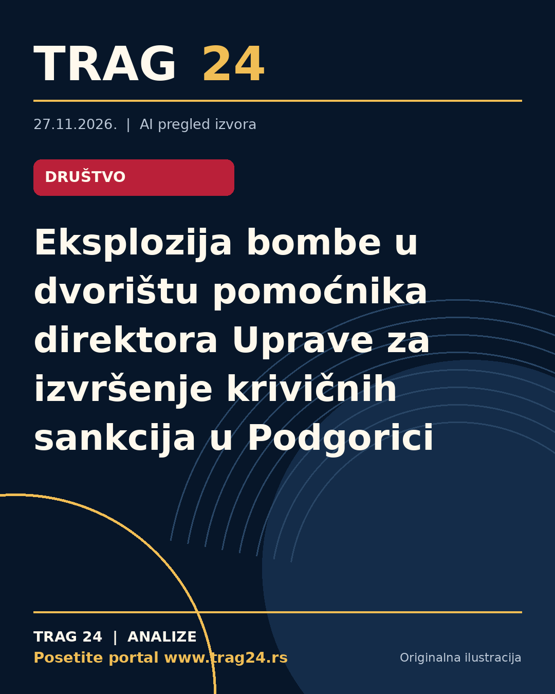

Eksplozija bombe u dvorištu pomoćnika direktora Uprave za izvršenje krivičnih sankcija u Podgorici

ŠTA SE DOGODILO
Jutros oko četiri sata u dvorištu kuće Nebojše Jankovića, pomoćnika direktora Uprave za izvršenje krivičnih sankcija (UIKS), u podgoričkom naselju Zlatica aktivirana je eksplozivna naprava koja je uništila službeni automobil marke Volvo sa registarskim oznakama PG ME 213, parkiran pored kuće.
HRONOLOGIJA
Eksplozija je prijavljena dežurnoj službi Odjeljenja bezbednosti u Podgorici, nakon čega su policijski službenici u saradnji sa Osnovnim državnim tužilaštvom u Podgorici obavili uviđaj. Događaj je bio predmet hitnog reagovanja nadležnih organa tokom jutarnjih sati današnjeg dana.
ŠTA NAVODE IZVORI
Mediji "Vijesti", N1 i B92 prenose nezvanične informacije o eksploziji. Crnogorski Ministarstvo unutrašnjih poslova (MUP) saopštilo je da ovaj čin ne tretira samo kao napad na službenike, već i kao napad na zakon i borbu protiv organizovanog kriminala. Iz MUP-a ističu da događaj smatraju povezanim sa profesionalnim angažmanom Jankovića u upravljanju UIKS-om u Spužu. Policija je izrazila nameru da primeni sve raspoložive resurse na zaštitu zaposlenih u UIKS-u. Mediji navode da se intenzivno radi na rasvetljavanju uzroka i istragom o ovom događaju.
ŠTA JE POTVRĐENO
Potvrđeno je da je automobil službeno vozilo pomoćnika direktora UIKS-a i da je uništen u eksploziji. Policija i Osnovno državno tužilaštvo aktivno rade na uviđaju i istrazi. Nema informacija o povređenima u incidentu. Zvanično je potvrđeno da se incident tretira kao ozbiljan napad u cilju zastrašivanja i ometanja rada bezbednosne službe.
ŠTA NIJE POTVRĐENO
Nisu potvrđeni motivi napada izvan generalnih izjava da je povezan sa radom napadnutog službenika. Nijedan osumnjičeni nije zvanično identifikovan ili priveden. Takođe, nema potvrde o eventualnim drugim ciljevima ili detaljima o vrsti i poreklu eksploziva koji je korišćen.
ŠTA OSTАJE OTVORENO: Istraga je u toku i ostaje nepoznato ko stoji iza ovog napada i koje su konkretne okolnosti koje su dovele do eksplozije. Takođe nije poznato da li će biti daljih mera zaštite za zaposlene u UIKS-u ili druge bezbednosne reakcije. Javnost i nadležni organi i dalje čekaju na rezultate istrage i zvanične informacije o slučaju.
Izvori
- https://n1info.rs/region/u-podgorici-bacena-bomba-u-dvoriste-pomocnika-direktora-uprave-za-izvrsenje-krivicnih-sankcija-unisten-mu-automobil/
- https://www.novosti.rs/crna-gora/vesti/1675182/eksplozija-podgorici-raznet-automobil-pomocnika-direktora-uprave-izvrsenje-krivicnih-sankcija
- https://www.b92.net/info/region/288518/bacena-bomba-u-dvoriste-pomocnika-direktora-uprave-za-izvrsenje-krivicnih-sankcija/vest
Ova analiza je pripremljena uz pomoć veštačke inteligencije na osnovu javno dostupnih izvora. Navodi izvora nisu nužno nezavisno potvrđeni.